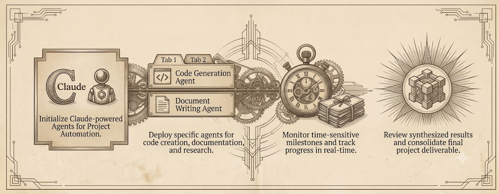
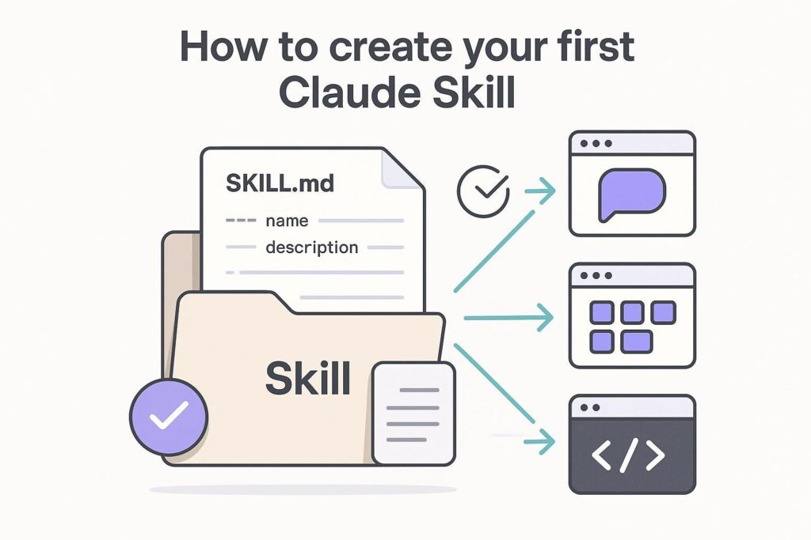

การใช้ AI Agent ทำงานในโปรเจกต์ให้ได้ผลจริงต้องมี 2 สิ่ง คือ Context และ Process — บทความนี้อธิบายการเขียน AGENTS.md เป็นธรรมนูญของโปรเจกต์ และการวาง Work Process ของงานเป็น SKILL ที่ใช้ซ้ำได้ ผ่านตัวอย่าง Software Development

ให้ AI Agent สร้างการทดสอบด้วย SKILL.md ที่ครอบคลุม OWASP Top 10 — Injection, XSS, Security Misconfiguration และ Broken Access Control ตั้งแต่ตอนทำ Unit Test
วิธีใช้ Claude AI ในการสร้างและดูแลเอกสาร LaTeX ระดับมืออาชีพ ครอบคลุม Document Class ภาษาไทยแบบกำหนดเอง workflow ด้วย XeLaTeX และ CLAUDE.md ที่ทำให้ LaTeX ที่ AI สร้างคอมไพล์ผ่านได้ทุกครั้ง

รันโมเดล AI บนเครื่องได้อย่างราบรื่นด้วย Ollama และ Opencode เรียนรู้การตั้งค่า qwen3-coder-next:q8_0 สำหรับช่วยเขียนโค้ดแบบส่วนตัวและออฟไลน์โดยตรงจาก Terminal